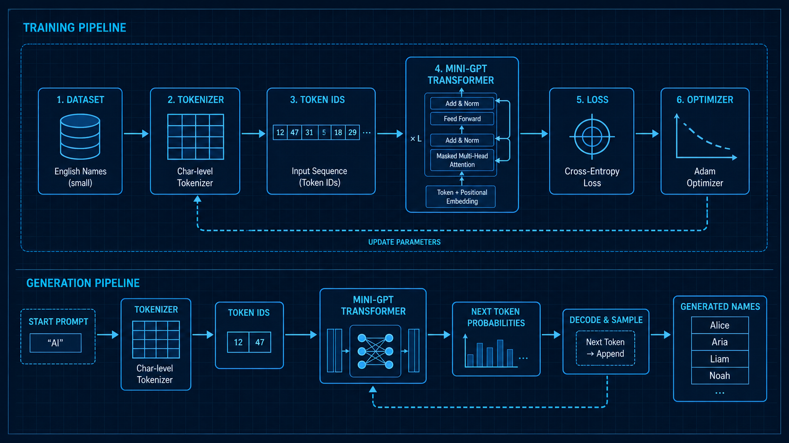
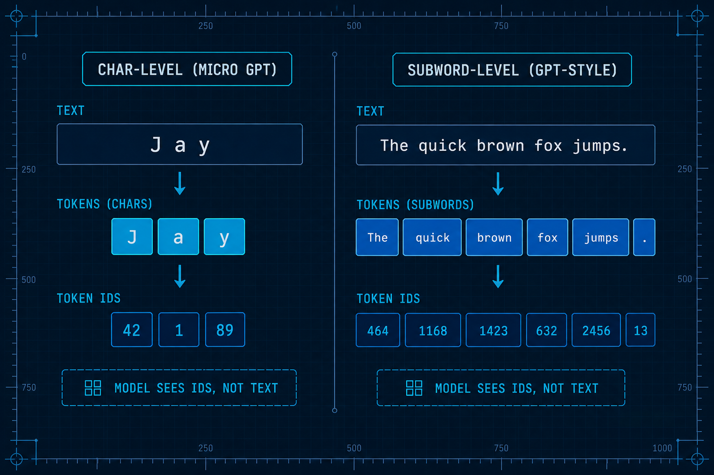
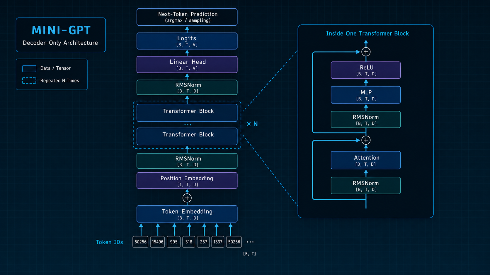
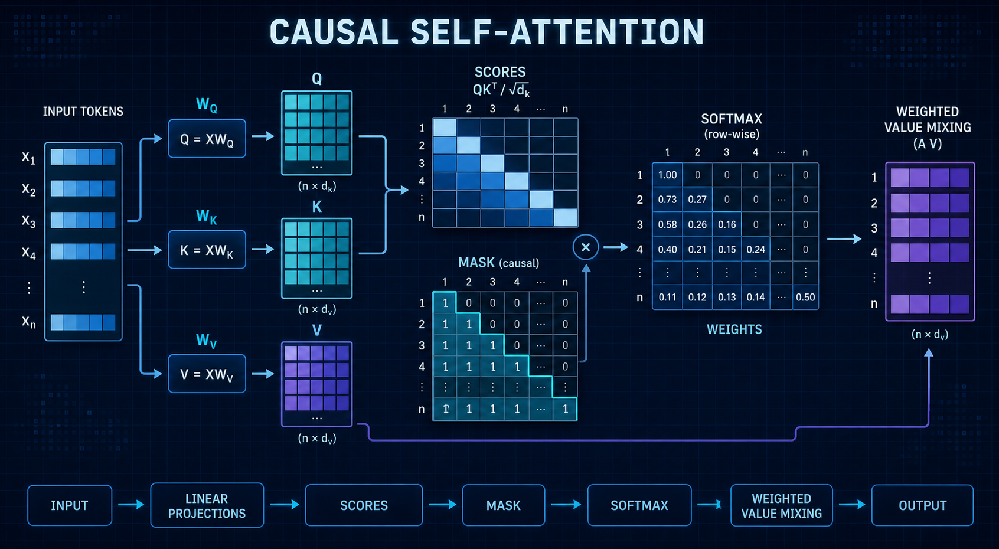

Understanding Transformer architecture and mechanics.
TokenizerEmbeddingAttentionRMSNorm + ReLU
Figure 1 from Vaswani et al., Attention Is All You Need, 2017.
SpeakerMolin
TeamInfra . ECP .CIS
ReferenceKarpathy microGPT / makemore lineage
Today we start from the Transformer architecture and then shrink it into a tiny name generator. The model is small, but the path is complete: tokenizer, embedding, attention, MLP, loss, backpropagation, Adam, and sampling. Once this miniature version is clear, the core mechanics of Transformer models become much easier to inspect.
01 / Goal
Train a name generator
Train a character-level GPT on roughly 3k English names, then sample new names one character at a time.
The task is small enough to inspect layer by layer.
The pipeline still covers both training and inference.
The goal is mechanical clarity, not production quality.

Slide 02 / 12
We shrink the problem down to name generation. Names are short and the dataset is small, but the model still has to learn statistical structure: common prefixes, letter combinations, endings, and sequence boundaries. That makes the task tiny enough to inspect while still complete enough to cover the core GPT architecture.
02 / Neural Network Basics
A Transformer is still a model
It is still a trainable function: inputs, parameters, outputs, loss, gradients, and updates.
NeuronA weighted sum followed by a nonlinear activation.
MLPStacked neurons that compute inside each token position.
BackpropChain rule machinery for finding how each parameter should move.
AdamMomentum and variance estimates for steadier parameter updates.
Slide 03 / 12
A Transformer sounds special, but it is not outside neural networks. It is still a function with inputs, parameters, outputs, and a loss. Backpropagation computes gradients, and an optimizer updates the parameters. The clever part is the function shape: attention lets token positions communicate, while the MLP computes within each position.
03 / Tokenizer
Text must become token ids
Models process numbers, not raw strings.
micro-gpt uses a character-level `CharTokenizer`.
A char tokenizer is simple, reversible, and ideal for teaching.
ChatGPT-style systems use much larger token vocabularies.
tok.fit("emma\nolivia")
ids = tok.encode("emma")
text = tok.decode(ids)

Slide 04 / 12
The tokenizer is the boundary between language and matrices. In micro-gpt, we deliberately use a primitive character tokenizer because it hides almost nothing. Larger models use more sophisticated tokenizers so common text fragments can become single tokens. OpenAI's tiktoken material also emphasizes that GPT models see tokens, and token counts affect context length and cost.
04 / Embedding
Ids become vectors
An embedding is a learned table. Each token id selects one vector row, and each position selects another.
positions = np.arange(T)[None, :]
x = token_embedding(idx) + position_embedding(positions)
Token embeddingAnswers: what symbol is this?
Position embeddingAnswers: where is it in the context?
Hidden stateAll later blocks operate on these vectors.
Shape(batch, time) -> (batch, time, channels)
Slide 05 / 12
Embedding is not a dictionary lookup for meaning. It gives each token a continuous coordinate that can be trained. At initialization, those vectors are nearly random. As loss falls, useful statistical relationships are written into the vectors.
05 / Transformer Architecture
Decoder-only GPT
Each block repeats two jobs: communication + computation.
Attention lets each position read prior context.
The MLP transforms the information at each position.
Residual paths let each layer edit the existing stream.
The causal mask prevents looking into the future.

Slide 06 / 12
GPT is a decoder-only Transformer that predicts the next token from left to right. Each block has two jobs: attention communicates across positions, and the MLP computes within each position. Residual connections make every layer an edit to the stream rather than a replacement.
06 / Attention
Q/K/V: content lookup
q = x @ Wq
k = x @ Wk
v = x @ Wv
scores = q @ k.T / sqrt(head_dim)
weights = softmax(mask(scores))
out = weights @ v
Query asks what this position wants. Key advertises what each position contains. Value carries the information that gets mixed.

Slide 07 / 12
Attention can be understood as content lookup. The current position produces a query, prior positions provide keys, and the information to mix is carried in values. Softmax turns scores into weights. The mask is essential: position t can only read positions up to t.
07 / Multi-head + MLP
Multiple heads read different relations
Multi-head attention splits channels into separate subspaces so each head can learn a different dependency pattern.
(B, T, C) -> (B, H, T, D) -> (B, T, C)
Head 1May focus on local spelling rhythm.
Head 2May focus on vowel and consonant patterns.
Head 3May focus on name-ending conventions.
MLPComputes C -> 4C -> C inside each position.
Slide 08 / 12
A single attention head reads context through one relation space. Multi-head attention adds parallelism: different heads can learn different relationships, then merge back into the residual stream. After attention, the MLP no longer communicates across tokens; it computes independently at each position.
08 / Linear & Norm
RMSNorm + ReLU
Linear is the basic trainable transform: `y = xW + b`.
Q/K/V, output projection, and MLP layers all depend on Linear.
RMSNorm rescales by root mean square without subtracting the mean.
ReLU is the most direct nonlinearity: `max(0, x)`.
Note: the current source still contains `LayerNorm` + `GELU`. This deck explains the target micro-gpt version with RMSNorm + ReLU.
Slide 09 / 12
Normalization stabilizes the scale entering each layer. LayerNorm subtracts the mean and divides by standard deviation; RMSNorm is simpler and controls scale through root mean square. ReLU is easy to explain: negative values are clipped, positive values pass through. For a teaching-oriented micro-gpt, this keeps attention on the Transformer structure itself.
09 / Softmax Output
From logits to the next character
The linear head projects hidden states to vocabulary size.
Logits are unnormalized scores.
Softmax turns scores into a probability distribution.
Cross-entropy penalizes low probability on the correct token.
The model does not output a full name at once. It outputs a probability distribution for the next character. During training, the correct answer is known, so cross-entropy pushes probability onto the target. During generation, we sample one character, append it to the context, and repeat.
10 / Recap + References + QA
One through-line: next-token prediction
names
→
ids
→
logits
Tokenizer: text -> ids
Embedding: ids -> vectors
Transformer: context -> hidden states
Softmax: logits -> probabilities
References
Andrej Karpathy: micrograd, makemore, nanoGPT, Let's build GPTPaper: Attention Is All You NeedOpenAI Cookbook: How to count tokens with tiktokenRepo: `docs/`, `src/model.py`, `src/train.py`
QA prompts
Why can a tiny model explain a large model? What is the core difference between attention and MLPs? What tradeoffs does tokenization create?
Slide 11 / 12
If there is one idea to remember, it is this: GPT is a next-token predictor. All the complicated structure serves one goal: at the current position, use the prior context to assign better probabilities to the next token. This is also a natural entry point for QA: tiny versus large models, attention versus MLPs, and tokenizer tradeoffs.
11 / Thank You
Thank You
The best way to understand GPT is to train one small enough to inspect.
python -m py_compile src/*.py
python src/train.py
Trychange block size, heads, layers
Comparechar tokenizer vs subword tokenizer
SwapLayerNorm/GELU -> RMSNorm/ReLU
Inspectshapes, gradients, generated names
SpeakerMolin
Sourcedocs/
Deckshare/slides/index.html
Thank you. The most valuable part of this project is not the generated names; it is that every layer can be opened and inspected. You can see how shapes change, how gradients return, and how parameters update. The best way to understand GPT is to train one small enough to see.